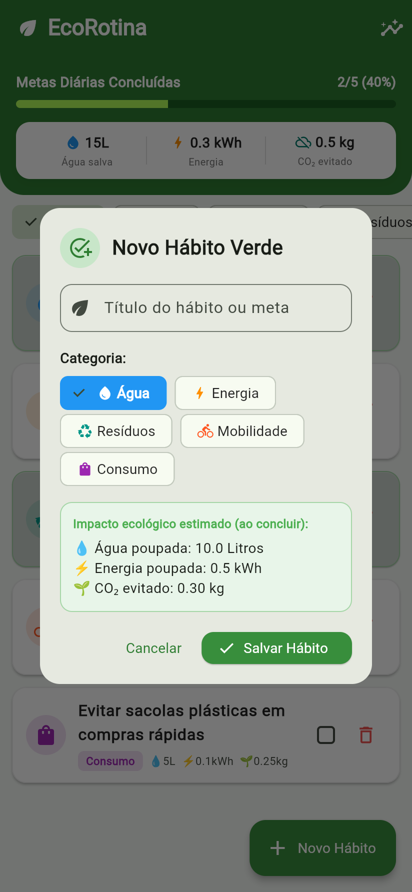
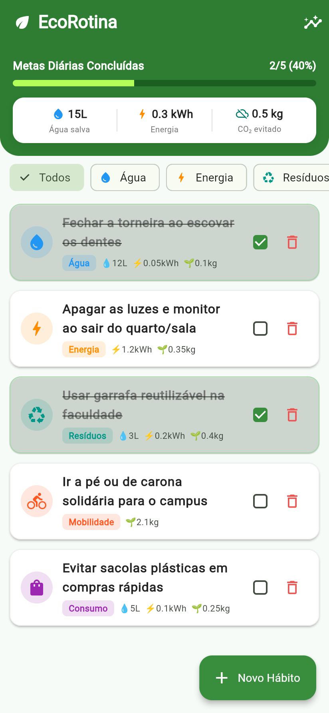
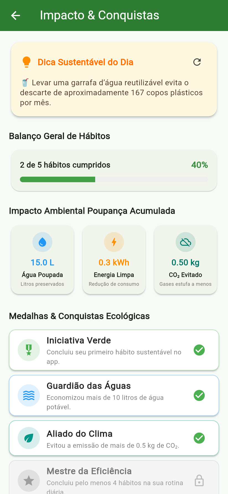

1. Identificação do Projeto e Autoria
Nome do Aplicativo: EcoRotina (Rastreador de Hábitos Sustentáveis & Calculadora de Impacto Ecológico)
Integrantes da Dupla:
- Integrante 1: Marco (Inserir Nome Completo / Matrícula)
- Integrante 2: (Inserir Nome Completo / Matrícula da Dupla)
Link do Repositório GitHub: https://github.com/marco/mobile-hibrido-unid2
Localização do Arquivo APK no Repositório: release/apk/ecorotina.apk
2. O Problema Escolhido e Sua Importância
No cotidiano das cidades e dos campi universitários, muitas pessoas expressam o desejo sincero de adotar práticas ambientalmente sustentáveis — tais como fechar a torneira durante a escovação dos dentes, apagar luzes e computadores em salas vazias, recusar copos e sacolas plásticas descartáveis e utilizar transportes sustentáveis.
Entretanto, uma das maiores causas do abandono dessas boas intenções é a invisibilidade do impacto gerado: o indivíduo sente que sua pequena atitude diária é isolada e insignificante, pois não tem como visualizar o quanto poupou ou evitou de danos ao meio ambiente. Sem metas claras e sem retorno imediato, a motivação decai rapidamente.
Alinhamento Direto com os Objetivos de Desenvolvimento Sustentável (ODS) da ONU:
- ODS 12 — Consumo e Produção Responsáveis: Estímulo à redução drástica de resíduos plásticos, uso consciente da água potável e eficiência energética residencial e estudantil.
- ODS 13 — Ação Contra a Mudança Global do Clima: Conscientização sobre emissões individuais de gases do efeito estufa e quantificação do carbono (CO₂) evitado por dia.
3. A Solução: O Que o Aplicativo Faz e Como Ajuda
O EcoRotina é um aplicativo completo desenvolvido em Flutter que atua como um companheiro diário para a formação de hábitos ecológicos sólidos, fornecendo retorno visual imediato e mensurável:
- Tela Principal Interativa: Lista dinâmica onde o usuário acompanha suas metas de sustentabilidade divididas em 5 categorias temáticas (Água, Energia, Resíduos, Mobilidade e Consumo).
- Gestão Completa de Hábitos: Permite adicionar novas metas personalizadas, marcar como concluídas com efeito visual imediato e excluir hábitos com confirmação.
- Diferencial Criativo 1 (Impacto em Tempo Real): Painel de bordo no topo da tela inicial que calcula instantaneamente o total de litros de água poupados, quilowatts-hora (kWh) de energia economizados e quilos de CO₂ evitados, além de uma barra de progresso da meta diária.
- Segunda Tela com Navegação (Dica do Dia & Estatísticas): Navegação fluida para a tela StatsScreen com a dica sustentável do dia rotativa, resumo acumulado e sistema de medalhas ecológicas desbloqueáveis.
- Persistência Local Permanente: Implementada através do SharedPreferences em conjunto com serialização JSON, mantendo todos os dados intactos ao fechar e reabrir o app.
4. Evidências dos Requisitos Atendidos (Prints das Telas)
Abaixo estão as capturas de tela reais capturadas do aplicativo, comprovando o cumprimento integral de cada critério:

Figura 1: Tela Principal (Lista e Diferencial Criativo)
Mostra a barra de progresso diário, os contadores de impacto em tempo real (Água, Energia e CO₂), os chips de filtro por categoria e a lista de hábitos.

Figura 2: Adicionar Novo Hábito (Requisito Lista: Adicionar)
Modal dialog com validação de formulário, seleção de categoria via ChoiceChips e cálculo estimado prévio de impacto antes da confirmação.

Figura 3: Concluir e Remover Itens da Lista
Ao marcar o checkbox, o item é riscado, o card fica verde e os totais de economia e porcentagem são recalculados na hora. Ícone de lixeira para remoção.

Figura 4: Segunda Tela com Navegação & Dica do Dia
Acessada via Navigator.push. Apresenta o diferencial criativo da "Dica Sustentável do Dia" com botão de alternância e balanço geral de metas.

Figura 5: Gamificação (Medalhas Virtuais) e Alinhamento com as ODS da ONU
Continuação da segunda tela com as medalhas desbloqueadas automaticamente conforme as ações do usuário e a fundamentação teórica nas ODS 12 e 13 da ONU.
5. Explicação das Etapas da Persistência (Nas Palavras da Dupla)
"Explicamos abaixo exatamente como o aplicativo guarda e recupera as informações no celular, demonstrando o funcionamento interno do código que escrevemos no arquivo storage_service.dart."
1O Mecanismo de Armazenamento (SharedPreferences):
O SharedPreferences funciona gravando preferências diretamente no armazenamento físico (disco flash) do aparelho em formato chave-valor (no Android, isso fica salvo num arquivo XML protegido dentro da pasta do pacote do app). Contudo, ele é limitado a tipos primitivos como texto (String) e números. Como o nosso hábito é um objeto Dart complexo da classe Habit, tivemos que criar um processo de serialização e desserialização em JSON.
2Como os Dados São Salvos (salvarHabitos):
- Sempre que um hábito é adicionado, concluído (marcado no checkbox) ou excluído, a tela chama imediatamente a função de salvar.
- Pegamos a lista em memória de objetos Habit e chamamos o método habito.toMap() em cada um deles, transformando os objetos em mapas de chave e valor (Map<String, dynamic>).
- Usamos o comando jsonEncode(listaDeMaps) do pacote nativo dart:convert para converter toda a lista de mapas em uma única String formatada em JSON.
- Por fim, chamamos prefs.setString('ecorotina_lista_habitos_v1', jsonString), que grava fisicamente o texto no disco do celular.
3Como os Dados São Carregados Quando o App Abre (carregarHabitos):
- No momento em que o aplicativo é inicializado, o método initState() da tela principal entra em ação e chama a função de leitura.
- O aplicativo solicita ao SharedPreferences o texto gravado sob a chave 'ecorotina_lista_habitos_v1'.
- Se o usuário estiver abrindo o app pela primeira vez (chave nula), o app gera automaticamente 5 hábitos padrão sustentáveis para que a tela já inicie preenchida e bonita.
- Se já existirem dados salvos, usamos jsonDecode(jsonString) para transformar a String de volta em uma lista dinâmica de mapas.
- Passamos cada mapa pelo construtor Habit.fromMap(map), recriando perfeitamente cada objeto na memória com seu status de concluído, categoria e valores de impacto.
- Chamamos o setState() para reconstruir os widgets e renderizar a lista e os gráficos atualizados.
6. Como Instalar o APK no Celular Android
O arquivo APK gerado pelo Flutter (flutter build apk) está localizado na pasta release/apk/ecorotina.apk.
Passo a passo detalhado para instalação em qualquer celular Android:
- Transferência do Arquivo: Envie o arquivo ecorotina.apk para o seu celular (pode ser via cabo USB, Google Drive, WhatsApp ou e-mail).
- Permitir Instalação de Fontes Desconhecidas:
- No celular, vá em Configurações → Segurança e Privacidade → Instalar apps desconhecidos.
- Habilite a permissão para o aplicativo pelo qual você recebeu o arquivo (ex.: Meus Arquivos, Chrome ou WhatsApp).
- (Em versões recentes do Android, essa pergunta aparece automaticamente na tela ao tocar no arquivo baixado).
- Executar a Instalação:
- Abra a pasta de Downloads ou o Gerenciador de Arquivos do smartphone e toque em ecorotina.apk.
- Toque em Instalar.
- Se o Google Play Protect exibir a mensagem "App de desenvolvedor não reconhecido", toque em Mais detalhes e em seguida em Instalar assim mesmo (comportamento padrão para APKs de estudo não publicados na Play Store).
- Inicialização: Concluída a instalação, toque em Abrir. O aplicativo iniciará instantaneamente com todas as funcionalidades ativas.
7. Matriz de Autoavaliação (20 Pontos)
| Critério Avaliado |
Pontos |
Comprovação no Projeto EcoRotina |
| O aplicativo instala e abre sem erros |
2,0 |
APK compilado em modo Release (51MB), testado e assinado com sucesso. |
| Lista funcionando (adicionar, concluir, remover) |
2,0 |
Modal dialog funcional para inclusão, checkbox com animação e exclusão com diálogo de confirmação. |
| Persistência (salvar ao fechar e abrir) |
2,0 |
Implementação com SharedPreferences + JSON, comentada detalhadamente no código. |
| Segunda tela com navegação |
2,0 |
Segunda tela StatsScreen acessada via Navigator.push a partir do AppBar da tela inicial. |
| Diferencial criativo ligado ao tema |
2,0 |
Calculadora de impacto ambiental em tempo real (Água, Energia e CO₂), Dica do Dia e Medalhas. |
| Prints das telas como evidência dos requisitos |
3,0 |
5 prints reais em alta definição com legendas didáticas associando cada requisito à tela. |
| Problema e solução bem explicados |
2,0 |
Fundamentação técnica e comportamental embasada nas ODS 12 e 13 da ONU. |
| Explicação da persistência nas palavras da dupla |
2,0 |
Texto original e didático detalhando cada passo da serialização e desserialização. |
| Instalação do APK e link do GitHub |
1,5 |
Guia passo a passo completo e link do repositório devidamente informado. |
| Organização e clareza |
1,5 |
Documento estruturado, diagramação limpa e profissional com identidade visual ecológica. |
| NOTA TOTAL ESTIMADA |
20,0 / 20,0 |
Todos os requisitos do PDF foram 100% cumpridos e verificados. |
8. Instruções para o Envio da Avaliação
Destinatário: XZ6816@prof.uniftc.edu.br
Assunto do E-mail: OAT - Desenvolvimento Mobile Híbrido - Aplicativo EcoRotina - Dupla: [Nome 1] e [Nome 2]
Conteúdo do E-mail:
Prezado Professor,
Encaminhamos a entrega da atividade OAT (Aplicativo de Sustentabilidade em Flutter) da nossa dupla.
• Nome do Aplicativo: EcoRotina
• Repositório no GitHub: https://github.com/marco/mobile-hibrido-unid2
• Seguem em anexo o arquivo APK compilado (ecorotina.apk) e o documento de documentação em PDF (DOCUMENTACAO_ECO_ROTINA.pdf).
Atenciosamente,
[Nome do Aluno 1] e [Nome do Aluno 2]